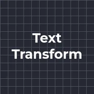
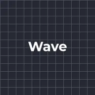
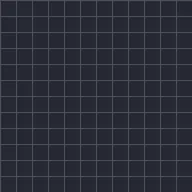

Tekst transformeren

Verplaatst, schaalt, draait en kleurt letters, woorden of regels binnen een bereik en past hun dekking aan. Anker bepaalt of schalen en draaien elk onderdeel of het midden van de laag gebruiken. Verplaats het bereik met Verschuiving om de verandering door de tekst te laten lopen.
Tekst transformeren verplaatst, schaalt, draait, fadet en kleurt letters, woorden of regels. Stel in wat er met de betrokken stukken moet gebeuren (Positie, Schaal, Rotatie, Dekking, Tint) en animeer dan Verschuiving om de verandering van begin tot eind door de tekst te laten lopen. De voorinstellingen Golf en Draaicascade zijn een goed begin.
Instellingen
| Instelling | Type | Bereik | Standaard |
|---|---|---|---|
| Bereik | Keuze | Oud, Standaard | Standaard |
| Begin | Getal | 0% tot 100% | 0% |
| Einde | Getal | 0% tot 100% | 100% |
| Verschuiving | Getal | -200% tot 200% | 0% |
| Op basis van | Keuze | Teken, Woord, Regel, Contour | Teken |
| Anker | Keuze | Onderdeel, Laag | Onderdeel |
| Positie | Punt (X, Y) | -4000 px tot 4000 px | 0 px, 0 px |
| Rotatie | Hoek | -3600° tot 3600° | 0° |
| Schaal | Getal | 0% tot 1000% | 100% |
| Uitrekken | Getal | -100% tot 1000% | 0% |
| Dekking | Getal | 0% tot 100% | 100% |
| Tint | Kleur | – | #FFFFFF, 0% dekkend |
| Ease-in | Getal | -100% tot 100% | 0% |
| Ease-out | Getal | -100% tot 100% | 0% |
| Overlap | Getal | 0% tot 1000% | 0% |
| Vorm | Keuze | Vierkant, Oplopend, Aflopend, Driehoek, Rond, Vloeiend | Vierkant |
| Vloeiendheid | Getal | 0% tot 100% | 0% |
| Willekeurige volgorde | Aan of uit | – | Uit |
| Seed | Getal | 0 tot 1000 | 1 |
Voorinstellingen
Kies er een op de detailpagina van het effect in de Effectenbibliotheek. Elke voorinstelling is een kant-en-klare instelling die je daarna nog kunt aanpassen.

Golf
Draaicascade